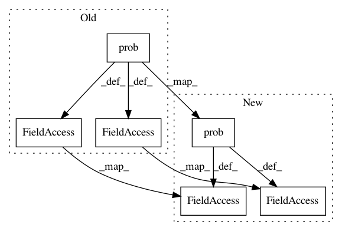

899acbe7a07e812edbdeefb5492e0b0bf96908f5,contents/12_Proximal_Policy_Optimization/simply_PPO.py,PPO,__init__,#PPO#,37
Before Change
with tf.variable_scope("loss"):
with tf.variable_scope("surrogate"):
// ratio = tf.exp(pi.log_prob(self.tfa) - oldpi.log_prob(self.tfa))
ratio = pi.prob(self.tfa) / oldpi.prob(self.tfa)
surr = ratio * self.tfadv
if METHOD["name"] == "kl_pen":
self.tflam = tf.placeholder(tf.float32, None, "lambda")
kl = tf.distributions.kl_divergence(oldpi, pi)
self.kl_mean = tf.reduce_mean(kl)
self.aloss = -(tf.reduce_mean(surr - self.tflam * kl))
else: // clipping method, find this is better
self.aloss = -tf.reduce_mean(tf.minimum(
surr,
tf.clip_by_value(ratio, 1.-METHOD["epsilon"], 1.+METHOD["epsilon"])*self.tfadv))
After Change
with tf.variable_scope("loss"):
with tf.variable_scope("surrogate"):
// ratio = tf.exp(pi.log_prob(self.tfa) - oldpi.log_prob(self.tfa))
ratio = pi.prob(self.tfa) / (oldpi.prob(self.tfa) + 1e-5)
surr = ratio * self.tfadv
if METHOD["name"] == "kl_pen":
self.tflam = tf.placeholder(tf.float32, None, "lambda")
kl = tf.distributions.kl_divergence(oldpi, pi)
self.kl_mean = tf.reduce_mean(kl)
self.aloss = -(tf.reduce_mean(surr - self.tflam * kl))
else: // clipping method, find this is better
self.aloss = -tf.reduce_mean(tf.minimum(
surr,
tf.clip_by_value(ratio, 1.-METHOD["epsilon"], 1.+METHOD["epsilon"])*self.tfadv))
In pattern: SUPERPATTERN
Frequency: 3
Non-data size: 6
Instances
Project Name: MorvanZhou/Reinforcement-learning-with-tensorflow
Commit Name: 899acbe7a07e812edbdeefb5492e0b0bf96908f5
Time: 2020-04-21
Author: morvanzhou@tencent.com
File Name: contents/12_Proximal_Policy_Optimization/simply_PPO.py
Class Name: PPO
Method Name: __init__
Project Name: freelunchtheorem/Conditional_Density_Estimation
Commit Name: 33d61460bcda81161f0254b074c3a0eda3ce70ee
Time: 2019-05-02
Author: simonboehm@mailbox.org
File Name: cde/density_estimator/NF.py
Class Name: NormalizingFlowEstimator
Method Name: _build_model
Project Name: freelunchtheorem/Conditional_Density_Estimation
Commit Name: f4c45be6554d717714d6ff5e67ab51bc4ea2e864
Time: 2019-05-02
Author: simonboehm@mailbox.org
File Name: cde/density_estimator/NF.py
Class Name: NormalizingFlowEstimator
Method Name: _build_model